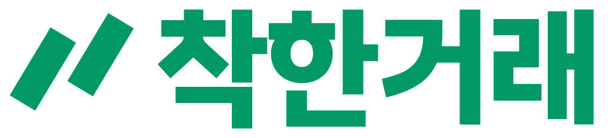
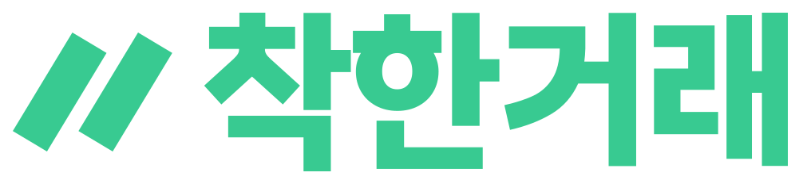
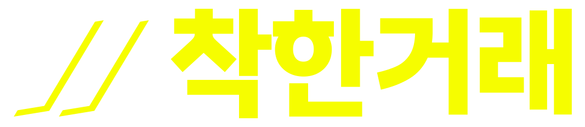
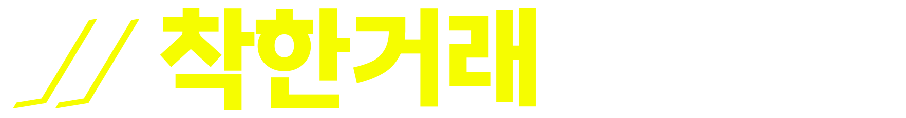
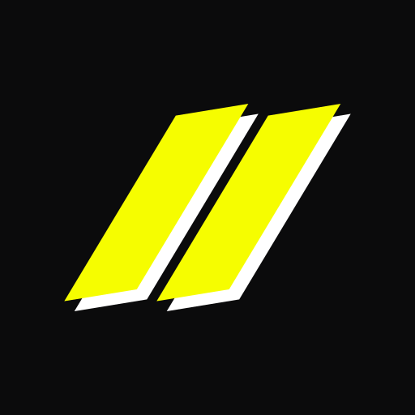
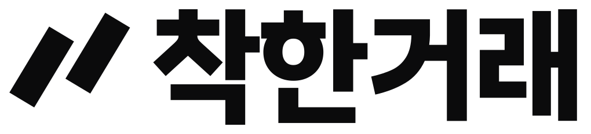

chakhan-ci-ai-rentcar-on-light.svg
chakhan-ci-ai-rentcar-on-light.svgchakhan-ci-ai-rentcar-on-dark.svg
 chakhan-ci-sangsik-on-light.svg
chakhan-ci-sangsik-on-light.svg chakhan-ci-sangsik-on-dark.svg
chakhan-ci-sangsik-on-dark.svg// = 잠시 멈춤 + 형광펜으로 잘 읽어라. 형광펜(//)은 언제나 노랑, 나머지(글자·그림자·카테고리)는 바탕의 반대색 하나. 규정 전체는 guide.html.

chakhan-ci-on-light.svg
chakhan-ci-on-dark.svg
chakhan-ci-on-dark-accent.svg (강조형)
chakhan-ci-ai-rentcar-on-dark-accent.svgchakhan-ci-ai-rentcar-on-light.svgchakhan-ci-sangsik-on-light.svgchakhan-ci-sangsik-on-dark.svg
chakhan-symbol-on-dark.svg chakhan-symbol-on-light.svg
chakhan-symbol-on-light.svg chakhan-symbol-on-yellow.svg
chakhan-symbol-on-yellow.svg
chakhan-ci-mono-black.svg (한 색만 되는 곳)